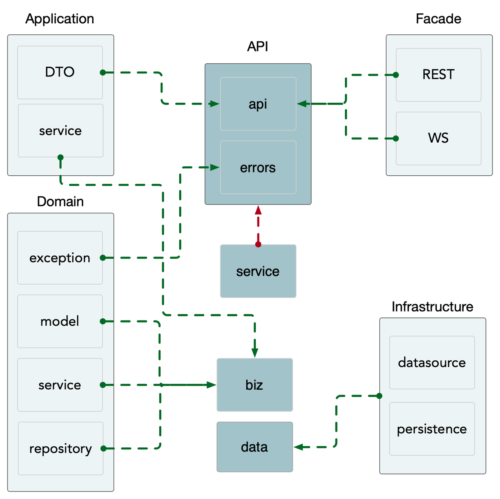
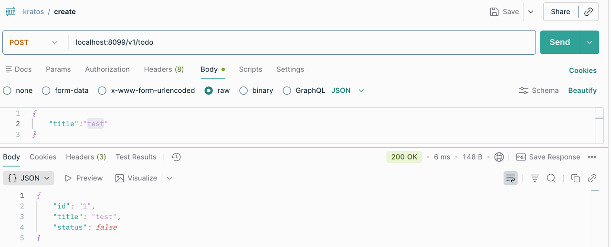
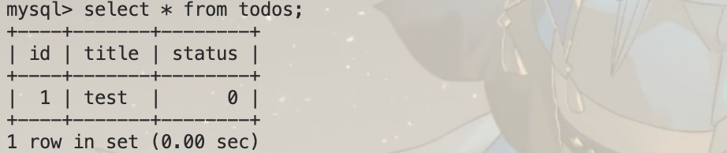
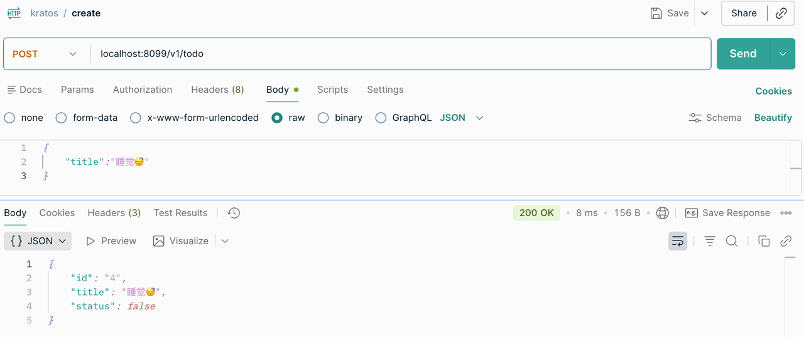
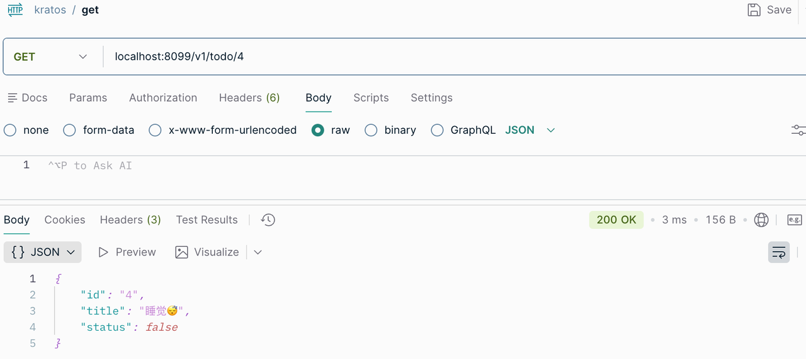
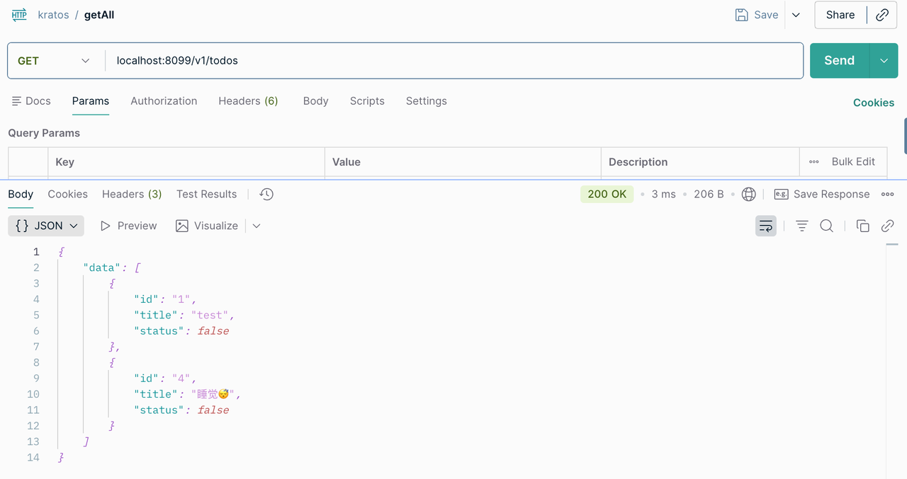
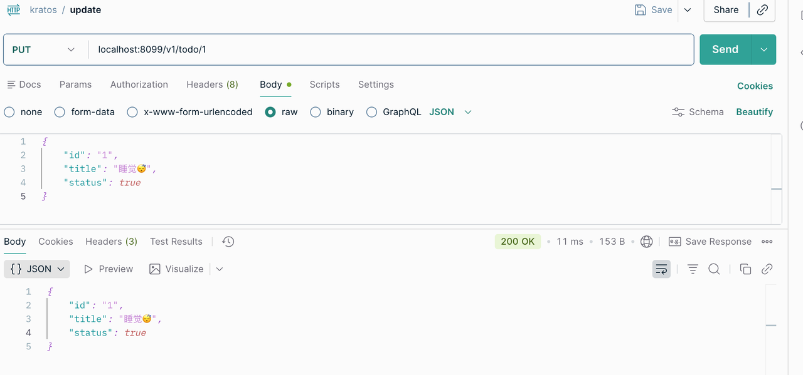
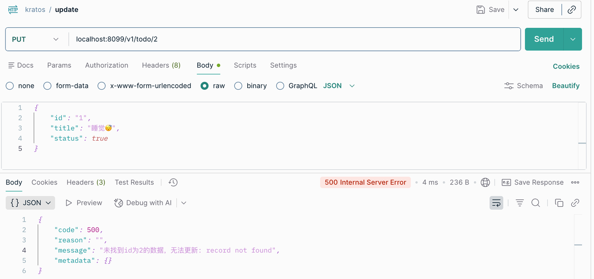
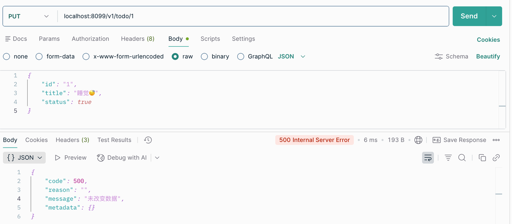
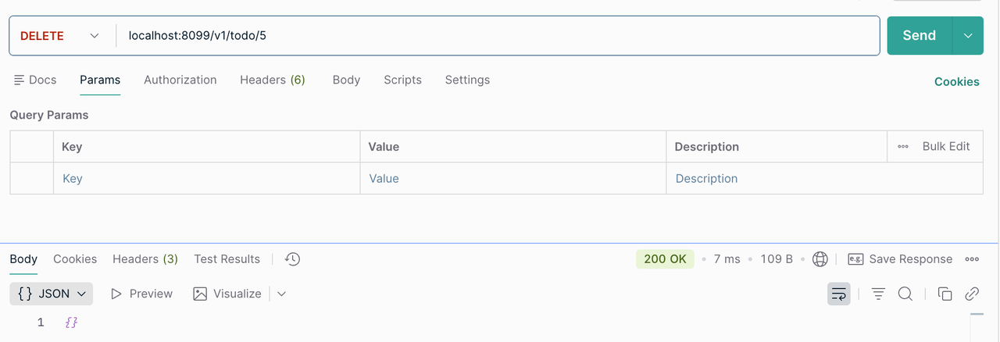

GoList
golang
kratos
demo
list
一个基于 Go-Kratos 实现的本地任务清单记录项目(只有后端)
简介
通过一个小清单工具的实现，完成 Kratos 主要功能的学习和实践
小清单操作逻辑主要是增删改查，主要是拿来练手用的。
项目地址：golist。
初始化
使用 Kratos 初始化项目并下载相关的依赖
kratos new golist
go mod tidy 定义API生成代码
通过定义 protobuf 实现 RPC API 和 Http API 的相关代码。
使用注释指定 HTTP/JSON 到gRPC 的转换
注意在生成代码的时候会有对 go版本的需求
在项目中增加新的 API
使用 kratos proto add指令，在指定位置增加新的 proto文件，这里使用 vx实现版本控制，目前是 v1 版本。
kratos proto add api/golist/v1/todo.proto之后生成的 protobuf 文件并不是空的，而是一个固定的模板，我们可以通过这个模板实现我们自己的服务设计
proto模板
syntax = "proto3";
package api.golist.v1;
option go_package = "golist/api/golist/v1;v1";
option java_multiple_files = true;
option java_package = "api.golist.v1";
service Todo {
rpc CreateTodo (CreateTodoRequest) returns (CreateTodoReply);
rpc UpdateTodo (UpdateTodoRequest) returns (UpdateTodoReply);
rpc DeleteTodo (DeleteTodoRequest) returns (DeleteTodoReply);
rpc GetTodo (GetTodoRequest) returns (GetTodoReply);
rpc ListTodo (ListTodoRequest) returns (ListTodoReply);
}
message CreateTodoRequest {}
message CreateTodoReply {}
message UpdateTodoRequest {}
message UpdateTodoReply {}
message DeleteTodoRequest {}
message DeleteTodoReply {}
message GetTodoRequest {}
message GetTodoReply {}
message ListTodoRequest {}
message ListTodoReply {}实现 todo 的 proto
syntax = "proto3";
package api.golist.v1;
import "google/api/annotations.proto";
option go_package = "golist/api/golist/v1;v1";
option java_multiple_files = true;
option java_package = "api.golist.v1";
service Todo {
rpc CreateTodo (CreateTodoRequest) returns (CreateTodoReply) {
option (google.api.http) = {
post: "/v1/todo",
body: "*"
};
};
rpc UpdateTodo (UpdateTodoRequest) returns (UpdateTodoReply) {
option (google.api.http) = {
put: "/v1/todo/{id}",
body: "*"
};
};
rpc DeleteTodo (DeleteTodoRequest) returns (DeleteTodoReply) {
option (google.api.http) = {
delete: "/v1/todo/{id}"
};
};
rpc GetTodo (GetTodoRequest) returns (GetTodoReply) {
option (google.api.http) = {
get: "/v1/todo/{id}",
};
};
rpc ListTodo (ListTodoRequest) returns (ListTodoReply) {
option (google.api.http) = {
get: "/v1/todos",
};
};
}
message CreateTodoRequest {
string title = 1;
}
message CreateTodoReply {
int64 id = 1;
string title = 2;
bool status = 3;
}
message UpdateTodoRequest {
int64 id = 1;
string title = 2;
bool status = 3;
}
message UpdateTodoReply {}
message DeleteTodoRequest {
int64 id = 1;
}
message DeleteTodoReply {}
message GetTodoRequest {
int64 id = 1;
}
message GetTodoReply {
int64 id = 1;
string title = 2;
bool status = 3;
}
message ListTodoRequest {
}
message todo {
int64 id = 1;
string title = 2;
bool status = 3;
}
message ListTodoReply {
repeated todo data = 1;
}生成proto代码
kratos proto client api/golist/v1/todo.proto生成server 代码
kratos proto server api/golist/v1/todo.proto -t internal/service修改项目结构
之前生成的基础 kratos会有跟我们实际的业务代码不同的文件，我们可以删除之前的 helloworld代码，修改成我们自己的代码。
下面是一张图，介绍了 Kratos 的项目结构，非常细致清晰。

功能实现
具体代码见golist。
create


get


getAll

update



delete
